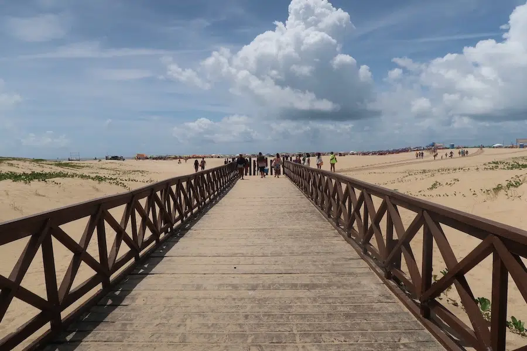

Praia de Atalaia ARACAJU

A orla de Atalaia é a mais famosa de Aracaju, com estrutura turística, calçadão e eventos culturais à beira-mar — ponto central para quem visita a capital.
A orla de Atalaia é a mais famosa de Aracaju, com estrutura turística, calçadão e eventos culturais à beira-mar — ponto central para quem visita a capital.
No interior do estado, o Cânion do Xingó, no Rio São Francisco, é uma das paisagens mais impressionantes: formações rochosas e navegação pelo rio atraem turistas. Fica em Canindé do São Francisco, a algumas horas de Aracaju.